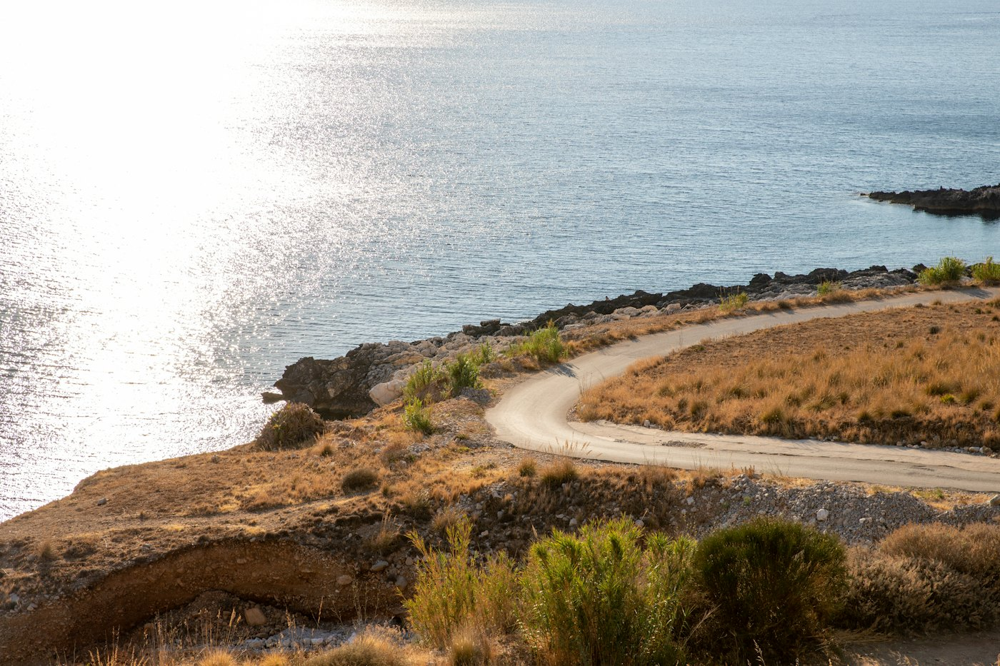
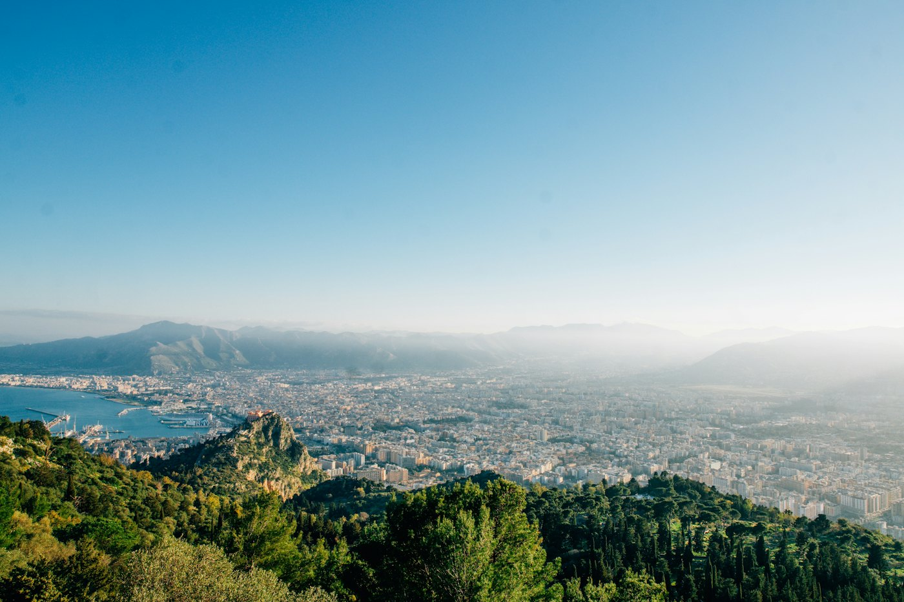

Transfer aeroporto
Palermo e Trapani, a qualsiasi ora. Bagagli caricati da noi, acqua a bordo.

Transfer dall'aeroporto di Palermo, tour di un giorno e auto per eventi. Autista che parla la vostra lingua, prezzo fisso concordato prima di partire.
Vi aspettiamo agli arrivi con il cartello col vostro nome. Se il volo ritarda, lo sappiamo prima di voi.
Palermo e Trapani, a qualsiasi ora. Bagagli caricati da noi, acqua a bordo.
Monreale, Cefalù, Segesta, Agrigento: l'autista aspetta mentre visitate.
Auto per gli sposi e navette per gli ospiti tra chiesa, location e hotel.
Disposizione oraria per riunioni e fiere, fattura elettronica all'azienda.
Toccate una destinazione: vedete distanza e tempo indicativo, poi chiedete il prezzo fisso su WhatsApp con il messaggio già scritto.
L'autista vi lascia all'ingresso, vi aspetta e vi porta a pranzo dove mangiano i palermitani.
 Mezza giornata
Mezza giornataLa Cattedrale, la Cappella Palatina, i mosaici del Duomo di Monreale: patrimonio UNESCO.
 Mezza giornata
Mezza giornataIl golfo dall'alto, poi la spiaggia dei palermitani e un arancino sul lungomare.

GiornataIl Duomo normanno, il lungomare e i vicoli. Sosta lungo la costa al ritorno.

GiornataIl tempio dorico in mezzo alle colline, poi il borgo medievale sopra Trapani.
 Giornata intera
Giornata interaIl Teatro Antico con l'Etna di fronte, Isola Bella dall'alto. Partenza all'alba.
Nel sito vero: le foto delle vostre auto, modelli e targhe NCC.
Fino a 3 passeggeri con 3 valigie grandi. Per transfer e business.
Famiglie, gruppi, sposi con gli ospiti. Spazio per passeggini e mazze da golf.
Concordato prima, scritto su WhatsApp. Nessun tassametro, nessuna sorpresa.
Ritardo o anticipo, l'autista è lì quando uscite.
Licenza NCC, assicurazione per i passeggeri, fattura.
Seggiolini e rialzi gratis, se ce lo dite prima.
Autisti che parlano inglese, tedesco o francese.
Carta a bordo, bonifico o link di pagamento.

Italiano, inglese, tedesco e francese, con una pagina per ogni transfer e ogni tour: «Palermo airport transfer», «Flughafentransfer Palermo».
La mappa prepara il messaggio WhatsApp con meta e passeggeri: rispondete con il prezzo e chiudete.
Scheda Google curata, foto della flotta, richiesta di recensione automatica dopo ogni corsa.
Una pagina dedicata ai partner con il loro link: gli ospiti prenotano, voi sapete chi ve li manda.
Annunci per chi cerca un transfer a Palermo nelle settimane prima del viaggio, con un budget sotto controllo.
Brevi video dal sedile del passeggero: Mondello all'alba, la Cattedrale di sera.